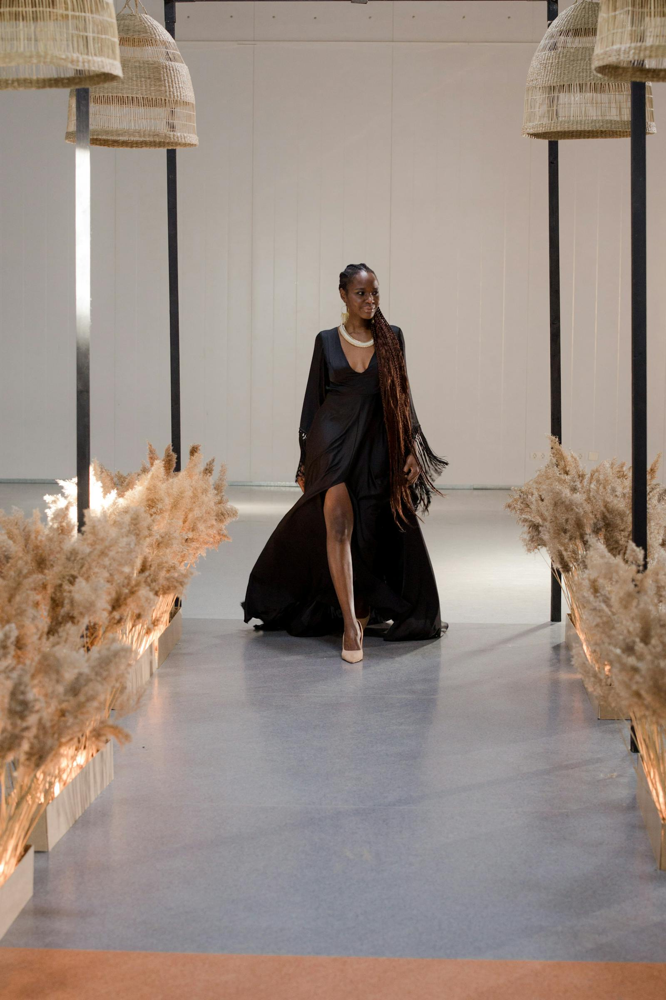
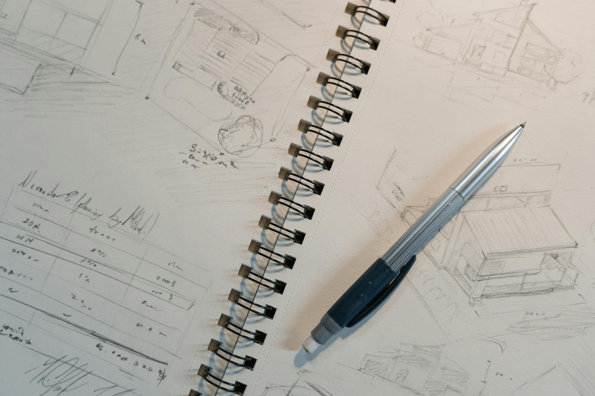

소개
귀사에 지원하는 여성복 디자이너 [이름]입니다. 10년간 도매·SPA 브랜드 현장에서 우먼즈 라인을 중심으로 일하며, 시즌 컨셉 → 라인업 → 도면·소재 선정 → 샘플·프로덕션 리뷰까지 한 흐름으로 책임질 수 있는 역할을 맡아 왔습니다.
다수의 유명 브랜드 프로젝트에서는 타깃·가격대·캘린더 안에서 디자인을 현실로 만드는 일, 즉 “예쁜 그림”이 아니라 매장과 생산에 통과하는 옷을 만드는 데 강점을 두고 있습니다. 패턴·생산·MD·영업과 수치와 일정으로 소통하며, 회사 입장에서 리스크를 줄이는 동료로 일하고 싶습니다.
핵심 강점 (업무에 바로 쓰이는 역량)
- 라인·아이템 기획: 무드보드·키룩 정리, 가격대별 비중, 시즌 스토리를 라인 시트로 정리해 의사결정을 돕습니다.
- 기술 디자인 감각: 스케치·사양 패키지·원단 선정 시 봉제·세탁·핏을 동시에 고려해 수정 라운드를 줄이는 방향으로 제안합니다.
- 현장 실행력: 샘플·피팅·프로덕션 미팅에서 문제를 짚고, 일정과 원가를 지키는 타협안을 빠르게 정리합니다.
- 협업·커뮤니케이션: 부서 간 용어와 우선순위를 맞춰 갈등이 아니라 결과물로 이어지게 조율하는 데 익숙합니다.

경력 개요
여성복 디자인
MD·생산 연계
디자인 제안
- 경력 연수: 약 10년 (여성복·의상 디자이너)
- 주요 경험: 국내외 유명 브랜드 우먼즈 라인 — 트렌드·타깃·가격대에 맞는 제안, 시즌당 라인 플랜과 아이템 밸런스를 잡고 컬러·소재 전략까지 맞춰 온 경험이 있습니다.
- 강점 요약: 디자인만이 아니라 도면·원단·봉제 리스크를 줄이는 제안, 생산·패턴·영업·MD와의 정합성 있는 커뮤니케이션, 급한 일정에서도 우선순위를 정해 밀어 붙이는 실행력입니다.
※ 실제 지원 서류에는 근무 브랜드명·기간·담당 역할을 아래 표처럼 구체적으로 적어 주시면 신뢰도가 높아집니다.
| 기간 | 브랜드/회사 | 담당 업무 |
|---|---|---|
| [YYYY.MM ~ YYYY.MM] | [브랜드명] | [예: 우먼즈 라인 디자인, 캡슐 기획 등] |
| [YYYY.MM ~ YYYY.MM] | [브랜드명] | […] |
업무 역량
- 컨셉 · 라인 구성 — 시즌 키워드·무드보드를 살 수 있는 라인 시트로 풀어내고, 가격대·아이템 비중까지 한 번에 맞춥니다.
- 디자인 디벨롭먼트 — 스케치·기술 패키지·수정 버전 관리. 샘플 단계에서 흔히 터지는 이슈를 줄이도록 사양을 압축해 정리합니다.
- 소재 · 실루엣 — 원단 제안 시 핏·세탁·원가·물량을 동시에 따져 생산 가능한 조합을 제시합니다.
- 협업 — 피팅·생산 미팅에서 피드백을 다음 액션으로 받아 적고, 현장 언어로 합의점을 빠르게 만듭니다.
디자인 철학
저는 “브랜드가 말하는 옷”과 “고객이 장바구니에 담는 옷”이 겹치는 지점을 디자인합니다.
트렌드만 쫓기보다 입었을 때의 실루엣·촉감·관리까지 설계하고, 현장 경험으로 일정·원가 안에서 품질을 지키는 타협과 우선순위를 잡는 데 자신이 있습니다.

지원 동기 및 포부
귀사는 [귀사 브랜드의 특징·지향점을 1~2문장으로 기입]이라는 방향성에 있어 업계에서 주목받고 있다고 알고 있습니다.
저는 그 방향에 여성복 라인의 명확한 아이덴티티와 판매 가능한 구성을 더하는 데 기여하고 싶습니다.
10년간의 우먼즈 현장 경험으로 시즌마다 필요한 건 감각만이 아니라 재고·캘린더·생산 조건이라는 전제임을 잘 압니다. 그 전제 위에서 디자인과 기획을 맞추겠습니다.
합류 초기에는 팀 방식과 제작 파이프라인에 빠르게 맞추고, 회의에서 숫자와 일정으로 설명 가능한 결과를 먼저 보여 드리겠습니다.
마무리
검토해 주셔서 감사합니다.
포트폴리오(PDF/링크)와 상세 이력은 별첨으로 제출드릴 수 있습니다. 면접 기회가 주어진다면, 구체적인 작업 사례를 말씀드리겠습니다.
포트폴리오 링크는 별첨으로 제출